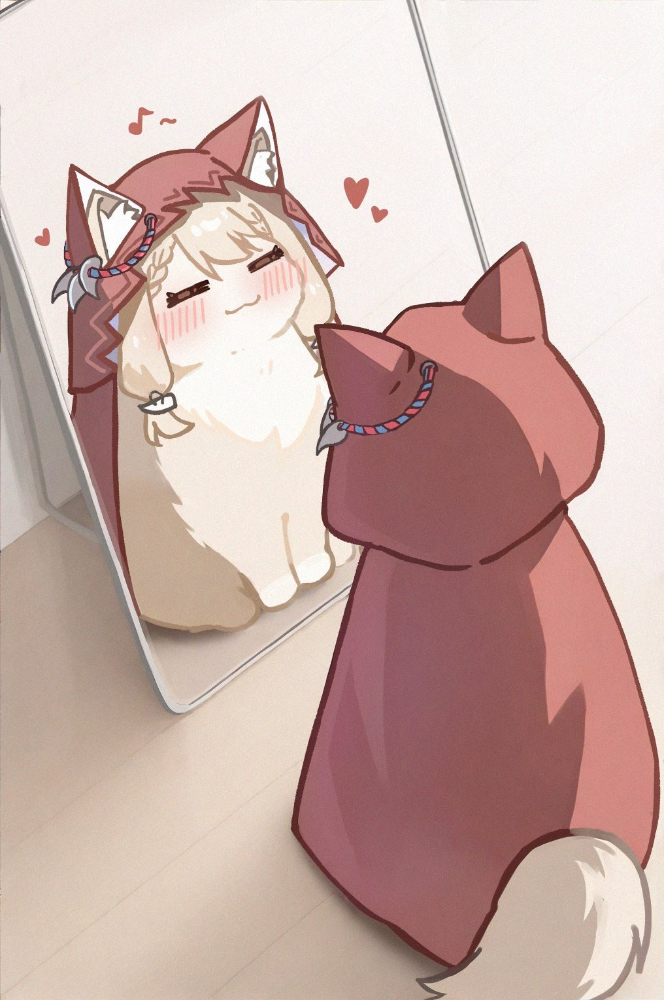

MISSION_01
[COMPLETED]
Profile Card Interactive
Halaman kartu profil interaktif dengan fitur modal popup & dynamic greeting.
STACK: HTML, CSS, JS
Siswa RPL SMKN 1 Kepanjen. Sedang mempelajari web development, Semantic HTML5, CSS Flexbox, dan JavaScript DOM untuk membangun antarmuka interaktif berbasis data.

Structure & Semantic
Flexbox & Responsive
DOM Manipulation
Version Control
Arsip lengkap tugas praktikum dan proyek rekayasa perangkat lunak — antarmuka web, Python, manipulasi DOM, dan desain antarmuka.
Halaman kartu profil interaktif dengan fitur modal popup & dynamic greeting.
Dokumentasi visual langkah praktikum dasar pemrograman Python.